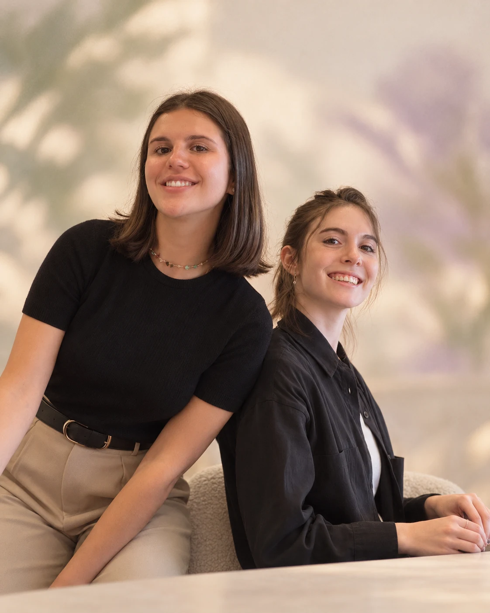

[ Valentina Lauret ][ Franca Giansetto ]
ESTRATEGIA · DISEÑO · DIRECCIÓN CREATIVA
slow ideas.
strong brands.
Del lápiz y papel a un universo de marca.
Dos miradas, un mismo proceso.Descubrí el estudio ↓
NUESTRA FORMA DE HACER
Ideas que se piensan
con tiempo.
Nos gusta observar antes de producir, pensar antes de sumar y darle a cada proyecto el espacio que necesita. Por eso trabajamos con una cantidad limitada de proyectos a la vez.
Queremos conocer la marca, involucrarnos en sus decisiones y dedicarle atención real durante todo el proceso. No buscamos producir más. Buscamos construir mejor.
Conocé cómo podemos acompañarte ↗
creative portfolio ↗
Identidades, proyectos y experiencias gráficas.
02 / CÓMO TE ACOMPAÑAMOSnuestros servicios ↗
Encontrá el punto de partida para tu marca.